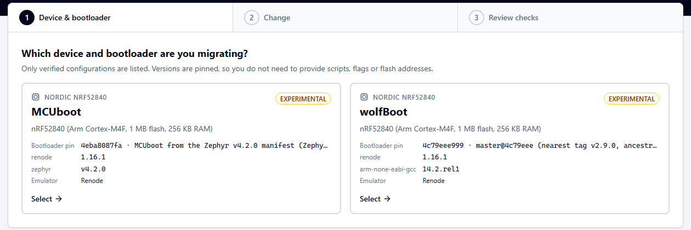
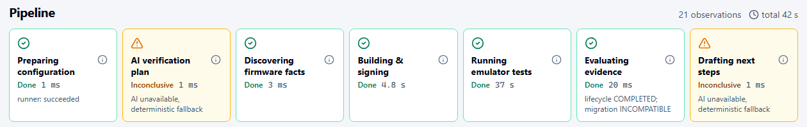
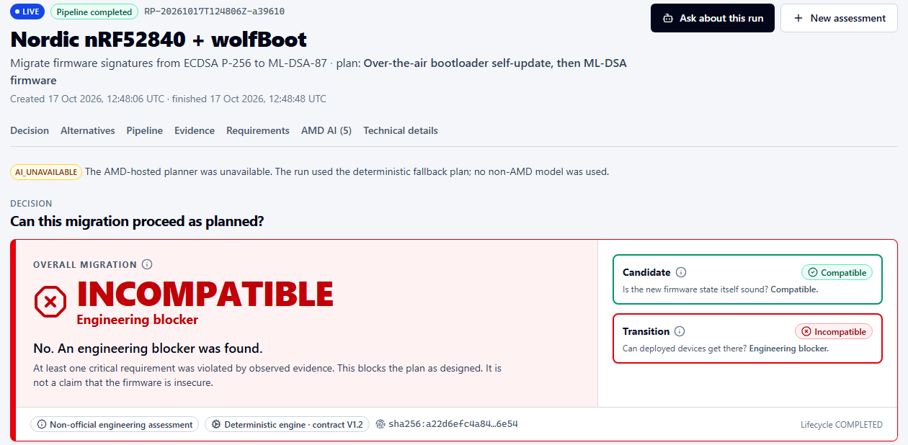
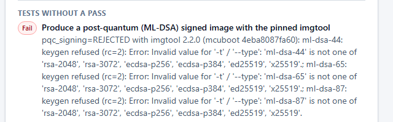

Help industrial IoT manufacturers verify that an update can reach installed devices—not just boot on a new one—before rollout. AMD-hosted AI plans and explains. The engine decides.
Values copied from a real run of the app (Renode emulation, 17 Oct 2026).
Firmware leads and product-security managers need to keep installed sensors maintainable, protecting the monitoring that supports industrial maintenance.
Nordic documents this SoC in industrial wireless sensors. Our demo uses the same MCU family, not these vendors' proprietary firmware or bootloaders.[1]
Hard-to-reach sensors turn a bootloader mismatch into engineering rework, field visits and potential gaps in monitoring. No customer incident or savings are claimed.
Main CRA obligations: 11 Dec 2027; reporting: 11 Sep 2026. Scope, exclusions and transition rules apply. No general ML-DSA mandate or CRA certification claim.[2]
A passing boot test does not prove a deployable update. On this profile, the installed bootloader cannot get there through the proposed path.
Both lanes were measured live by ReleaseProof (wolfBoot @4c79eee, Renode 1.16.1, run RP-20261017T124806Z-a39610).
Device + bootloader with pinned commits and toolchains. No scripts, flags or flash addresses to type.
For example ECDSA P-256 → ML-DSA-87. Review the required checks and the ones the AI may add.
Builds and signs with ephemeral keys, then boots and updates in Renode. Positive and negative tests feed the V1.2 verdict, canonical hash and manifest.



| nRF52840 + wolfBootchange: ECDSA P-256 → ML-DSA-87 | nRF52840 + MCUboot (Zephyr)change: ECDSA P-256 → ML-DSA | |
|---|---|---|
| Pinned stack | wolfBoot 4c79eee · wolfSSL 4aa1ad7 · Arm GCC 14.2.rel1 | MCUboot 4eba8087 · Zephyr v4.2.0 · SDK 0.17.4 · imgtool 2.2.0 |
| Emulation | Renode 1.16.1, nRF52840; SVD baked in and sha256-pinned | Renode 1.16.1 with ReleaseProof's own NVMC flash model (MIT), swap-using-move |
| Candidate check | ML-DSA-87 bootloader and image built and booted (E02); signed image 12 876 B fits the 262 144 B slot | PQC signing attempt with the pinned tool (E02): imgtool refuses ml-dsa-44/65/87 (measured) |
| Field-update path | Source inspection (E11): no nRF52 self-update path (RAM_CODE=0) | Partition map + Kconfig (E11): single-stage MCUboot, no bootloader slot |
| Negative tests | Tampered image rejected (E03) · deployed ECDSA bootloader rejects the ML-DSA update (X01) · candidate rejects an ECDSA image (P01) | Tampered image rejected (E03) · update signed with another key rejected (X01) |
| Engine verdict | Candidate COMPATIBLE Transition INCOMPATIBLE REQ-BOOT-S0S1 violated · run a39610 · 8/8 tests · 61 artifacts | Candidate INCOMPATIBLE Transition INCOMPATIBLE REQ-PQC-VERIFIER + REQ-BL-FIELD-UPDATE · run 7682fc · 7/7 tests · 50 artifacts |
Why the checks differ: the test semantics are bootloader-agnostic (E01 current boots, E02 candidate, E03 auth-negative, X01 cross-transition, E05 layout, E11 field-update capability). Each profile maps them to its own build and emulation templates. Runners measure; only the engine decides. A missing observation becomes UNKNOWN, never a pass.

Picks and orders the optional registered checks. Required checks always run, and unknown templates are blocked and shown.
Pinned build, ephemeral keys, Renode boot and update, UART capture. No network access, and every artifact is hashed.
Candidate, transition and migration verdicts plus an explanation graph and a canonical hash. Golden-hash regression tests guard it.
Explanations must cite real evidence IDs. Alternatives come only from the profile's allowed set and are labelled PROPOSAL.
A human picks an alternative. That creates a new run with a parent reference, and history is never changed.
↺ the re-evaluation feeds back into ③ or, when new tests are needed, starts a new LIVE run at ②
REQ-BOOT-S0S1 is violated: the deployed wolfBoot cannot replace itself over the air on nRF52840.
The blocker is gone, but recovery from an interrupted update (INV-I4) was never observed, so the result is an honest unknown and not a pass. The parent's hash is unchanged.
Run lifecycle: PREPARING → AI_PLAN → DISCOVERY → BUILD_SIGN → EMULATION_TESTS → EVALUATION → NEXT_STEPS. If a runner is killed or crashes, the run is FAILED and no verdict is issued. Secrets live only in the api container.
A fleet used only to illustrate exposure. ReleaseProof evaluates a configuration and transition, not each node individually.
Assume 250 devices require physical service, at €250 per visit. These assumptions are not a measured failure rate or market price.
5,000 × 5% × €250. We have not demonstrated that ReleaseProof avoids this cost; validate with design partners.
Pre-rollout blockers found, engineering hours saved, validated field visits avoided, and cost per supported profile/run.
Per device + bootloader + toolchain profile, kept pinned and re-validated as upstream changes. Covers wolfBoot, MCUboot and future bootloader families.
Versioned review packs and a strict preflight CLI are implemented. Hosted CI execution, OTA integration and production billing are not claimed.
Bringing an OEM's own board and bootloader fork into the registry, with acceptance-gated promotion to SUPPORTED.
Verify one OEM board/bootloader/change, then make repeatable preflight evidence part of that supported product line's release process.
| Category · examples | Main documented focus | Relationship to ReleaseProof |
|---|---|---|
| Binarly · ONEKEYcrypto inventory / PQC readiness | Binary analysis, dependencies, crypto exposure; Binarly also documents reachability and CI gates | Complementary inputs. No claim that they cannot integrate dynamic tests. |
| Finite Stateadjacent firmware release-assurance competitor | Product security, evidence-linked AI, release policy gates and audit-ready evidence | Closest adjacent positioning. We focus on cross-generation bootloader migration, not unique ownership of evidence gates. |
| Memfault · Mender · Foundries.ioOTA / fleet lifecycle | Deployment, telemetry, staged rollout and secure-update workflows | Potential integration partners. ReleaseProof is a preflight check, not a delivery replacement. |
| Renode / Antmicro · upstream CIembedded emulation / testing building blocks | Repeatable execution and bootloader regression tests | We build on them with transition rules, negative tests, evidence projection and supervised AI. |
| ReleaseProoftwo supported nRF52840 configurations | Deployed → candidate tests; separate candidate/transition verdicts; conservative UNKNOWN handling | Scoped engineering assurance before rollout—not hardware validation, OTA or certification. |
Hardware-in-the-loop and interrupted-update tests, then commercial forks, STM32/NXP profiles and OTA/CBOM integrations. Each new configuration needs its own adapter, runner and acceptance.
Don't ask only whether your new firmware works. Ask whether deployed devices can get there—before rollout.